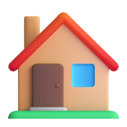

ILAC COMMUNITY
새로운 삶의 준비,
함께 묻고 알아보세요.
정착 정보부터 경험과 질문까지, 필요한 내용을 한곳에서 살펴보세요.

지금 필요한 정보부터 찾아보세요.
질문들 모아보기
관심 분야로 질문을 좁혀 보세요.
2026.10.09 확인한 공개 화면의 예시이며 실시간 목록이 아닙니다.현재 커뮤니티 보기
나라별 정착 가이드
나의 목적에 맞는 나라를 같은 기준으로 살펴보세요.
더 많은 국가 알아보기
근거로 준비하는 해외 생활
27개 주제의 설명·체크리스트·공식 출처를 확인하세요.
공개 정보 기반 편집 안내 · 자료 조회 2026.10.09 · 전문가 감수 전
일치하는 준비 가이드가 없습니다.
뉴스 기사·공식 링크 · 16개국 공식 확인 경로떠나기 전에, 함께 배우세요.
Academy는 무료입니다. 세션별 일정과 신청 방법을 확인하세요.
UAE 뉴스 모아보기
해외 생활과 이민 관련 뉴스의 원문과 발행일을 확인하세요.
운영 사이트 발췌 · 실시간 뉴스 피드가 아닙니다.
찾는 내용이 없어요.
검색어를 바꾸거나 조건을 초기화해 다시 찾아보세요.